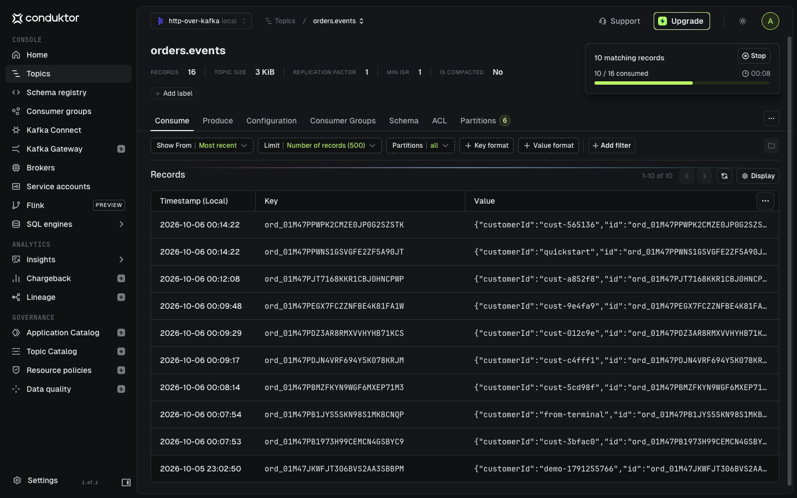

Zero change in your services
No Kafka client, no outbox, no new deployment. Callers keep their HTTP calls and get the service's exact response, byte for byte.
Your microservices keep speaking HTTP. http-over-kafka carries their calls through Kafka, so every order, payment and update becomes a live event your whole company can build on. Nothing to rewrite, no Kafka client to add.
The business asks for live dashboards, instant fraud checks, personalization, AI agents that react as things happen. The data is already there, flowing through your HTTP calls every second. It just disappears once the response is sent.
Services call each other over HTTP. Each call carries a business fact, and nobody else ever sees it.
The same calls, the same code. Kafka sits underneath and records each one as a durable, ordered event.
Analytics, fraud, search, AI agents and audit subscribe to the stream. The teams that own the services don't have to do anything.
Three real requests, replayed in a loop. Watch the failed one: it is recorded as a failure and produces no business event. Watch the retry: the service is not called twice.
Caller checkout service
Kafka what it keeps
Service orders, unchanged
No Kafka client, no outbox, no new deployment. Callers keep their HTTP calls and get the service's exact response, byte for byte.
Declare OrderCreated in the OpenAPI file. It is published only when the service really answers 201.
x-conduktor-event:
on: 201
type: OrderCreated
key: $.response.body.idA process dies mid-call? The caller gets an explicit "outcome unknown", never a silent second charge.
Every record is signed by its producer. Caller secrets never enter Kafka. Who called what is on the record.
Moving a service in or out is a route change. Reads go straight to the service and never touch Kafka.
No big-bang migration. Each step works on its own and delivers value before the next one.
Put a single service behind the gateway. Its callers switch hostname. Nothing else moves.
Every mutation is now in Kafka with its caller and outcome. Plug in audit or analytics right away.
Declare OrderCreated or PaymentCaptured in the API contract. Other teams subscribe to facts, not logs.
Add the next service, and the next. The stream of your business fills in without a rewrite anywhere.
The request is written to Kafka before the service is touched, so nothing can happen without leaving a trace. For the caller, the call stays synchronous.

What a caller receives, and whether the service runs, in every case that matters.
| Situation | The caller receives | The service runs |
|---|---|---|
| Everything works | The service's own response | Once |
| The gateway gives up waiting | 504 with the request ID, the command keeps going | Once, later |
Retry with the same Idempotency-Key | The original response, marked replayed | No |
| The bridge dies after calling the service | 502 outcome_unknown, never a silent retry | Once |
| Kafka refuses the command | 503, guaranteed not applied | No |
| A forged response is injected | The real response, the forgery is rejected | Once |
Measured on one laptop, single broker, replication factor 1. Multi-broker numbers are next on the roadmap. Writing the test suite uncovered five ways to charge twice; each is fixed and covered by a regression test.
All you need is Docker. The quickstart runs Kafka, two demo services, http-over-kafka, a live playground and Conduktor Console to browse the topics.
curl -fsSL https://sderosiaux.github.io/http-over-kafka/quickstart.yml \
| docker compose -f - up -d --waitcurl -i localhost:8080/orders -H 'Host: orders' \
-H "Authorization: Bearer $(curl -s localhost:8090/token)" \
--json '{"customerId":"c-1","items":[{"sku":"A1","quantity":2}]}'HTTP/1.1 201 Created, the demo service's own answer.
orders.events in Conduktor Console, filled by plain HTTP calls. No service was changed to produce these records.Ready to try it on your own services? Put a service behind the gateway. Done for now? docker compose -p http-over-kafka-quickstart down -v
The Conduktor team
At Conduktor we work on Kafka every day, and we see a lot of Kafka deployments. The same story keeps coming back: the technology delivers, and adopting streaming is still hard.
Kafka itself is rarely the problem. Streaming asks teams to change how they work: publish what happens instead of keeping it behind an API, and let others build on it. That shift is what makes data valuable. Facts get shared once, every team can use them, and better products for customers follow. Too many companies stop halfway, and that is a waste.
Meanwhile, real time has become what customers expect: live order status, instant fraud checks, stock that is right now and not an hour ago. But you can't ask every team to rewrite its services. Those are large programs, with their own budgets and risks, and they compete with everything else on the roadmap.
http-over-kafka starts from what you already have. Your HTTP services stay exactly as they are. The stream of your business builds up underneath them, and your teams can start real-time use cases, and get used to thinking in events, without a transformation program.
The project is experimental and moving fast. Every change starts as an issue or a pull request. Pick a roadmap item, propose your own, or tell us how you would use it.
Found a security issue? Report it privately.